СП 494.1325800.2020 «Конструкции покрытий пространственные металлические. Правил»
О документе: разработчики, утверждение, регистрация, ключевые слова
СВОД ПРАВИЛ
СП 494.1325800.2020
Издание официальное
- 1 ИСПОЛНИТЕЛЬ - АО «НИЦ «Строительство» - ЦНИИСК им. В.А. Кучеренко
- 2 ВНЕСЕН Техническим комитетом по стандартизации ТК 465 «Строительство»
3 ПОДГОТОВЛЕН к утверждению Департаментом градостроительной деятельности и архитектуры Министерства строительства и жилищнокоммунального хозяйства Российской Федерации (Минстрой России)
- 4 УТВЕРЖДЕН Приказом Министерства строительства и жилищнокоммунального хозяйства Российской Федерации от 29 декабря 2020 г. № 892/пр и введен в действие с 30 июня 2021 г.
- 5 ЗАРЕГИСТРИРОВАН Федеральным агентством по техническому регулированию и метрологии (Росстандарт)
В случае пересмотра (замены) или отмены настоящего свода правил соответствующее уведомление будет опубликовано в установленном порядке. Соответствующая информация, уведомление и тексты размещаются также в информационной системе общего пользования - на официальном сайте разработчика (Минстрой России) в сети Интернет
© Минстрой России, 2020
Настоящий нормативный документ не может быть полностью или частично воспроизведен, тиражирован и распространен в качестве официального издания на территории Российской Федерации без разрешения Минстроя России
Дата введения - 2021-06-30
УДК 624.074
ОКС 91.080.10
Ключевые слова: конструкции покрытий пространственные металлические, правила проектирования, стержневые системы, вантовые (висячие) системы, тонколистовые системы, комбинированные системы, материалы, расчеты, узлы и детали
\_\_\_\_\_\_\_\_\_\_\_\_\_\_\_\_\_\_\_\_\_\_\_\_\_\_\_\_\_\_\_\_\_\_\_\_\_\_\_\_\_\_\_\_\_\_\_\_\_\_\_\_\_\_\_\_\_\_
Введение
6 ВВЕДЕН ВПЕРВЫЕ
Настоящий свод правил разработан с учетом положений федеральных законов от 27 декабря 2002 г. № 184-ФЗ «О техническом регулировании», от 30 декабря 2009 г. № 384-ФЗ «Технический регламент о безопасности зданий и сооружений» и содержит требования к расчету и проектированию металлических пространственных конструкций покрытий.
Свод правил разработан авторским коллективом АО «НИЦ «Строительство» - ЦНИИСК им. В.А. Кучеренко (руководитель темы - д-р техн. наук П.Г. Еремеев , д-р техн. наук И.И. Ведяков , канд. техн. наук Д.Б. Киселев ).
\_\_\_\_\_\_\_\_\_\_\_\_\_\_\_\_\_\_\_\_\_\_\_\_\_\_\_\_\_\_\_\_\_\_\_\_\_\_\_\_\_\_\_\_\_\_\_\_\_\_\_\_\_\_\_\_\_\_\_
КОНСТРУКЦИИ ПОКРЫТИЙ ПРОСТРАНСТВЕННЫЕ МЕТАЛЛИЧЕСКИЕ Правила проектирования
Metal spatial structures of roofs. Design requirements
\_\_\_\_\_\_\_\_\_\_\_\_\_\_\_\_\_\_\_\_\_\_\_\_\_\_\_\_\_\_\_\_\_\_\_\_\_\_\_\_\_\_\_\_\_\_\_\_\_\_\_\_\_\_\_\_\_\_\_\_\_\_\_\_\_\_
1Область применения
2Нормативные ссылки
В настоящем своде правил использованы нормативные ссылки на следующие документы:
ГОСТ 977-88 Отливки стальные. Общие технические условия
ГОСТ 1050-2013 Металлопродукция из нелегированных конструкционных качественных и специальных сталей. Общие технические условия
ГОСТ 2246-70 Проволока стальная сварочная. Технические условия
ГОСТ 2789-73 Шероховатость поверхности. Параметры и характеристики
СП 1325800.2020
ГОСТ 3064-80 Канат одинарной свивки типа ТК конструкции 1×37 (1+6+12+18). Сортамент
ГОСТ 3090-73 Канаты стальные. Канат закрытый несущий с одним слоем зетобразной проволоки и сердечником типа ТК. Сортамент
ГОСТ 3241-91 Канаты стальные. Технические условия
ГОСТ 4543-2016 Металлопродукция из конструкционной легированной стали. Технические условия
ГОСТ 4784-2019 Алюминий и сплавы алюминиевые деформируемые. Марки
ГОСТ 5582-75 Прокат тонколистовой коррозионно-стойкий, жаростойкий и жаропрочный. Технические условия
ГОСТ 7062-90 Поковки из углеродистой и легированной стали изготавливаемые ковкой на прессах. Припуски и допуски
ГОСТ 7675-73 Канаты стальные. Канат закрытый несущий с одним слоем клиновидной и одним слоем зетобразной проволоки и сердечником типа ТК. Сортамент
ГОСТ 7676-73 Канаты стальные. Канат закрытый несущий с двумя слоями клиновидной и одним слоем зетобразной проволоки и сердечником типа ТК. Сортамент
ГОСТ 8479-70 Поковки из конструкционной углеродистой и легированной стали. Общие технические условия
ГОСТ 13726-97 Ленты из алюминия и алюминиевых сплавов. Технические условия
ГОСТ 18899-73 Канаты стальные. Канаты закрытые несущие. Технические условия
ГОСТ 18901-73 Канаты стальные. Канат закрытый несущий с двумя слоями зетобразной проволоки и сердечником типа ТК. Сортамент
ГОСТ 19281-2014 Прокат повышенной прочности. Общие технические условия
ГОСТ 19903-2015 Прокат листовой горячекатаный. Сортамент
ГОСТ 21631-2019 Листы из алюминия и алюминиевых сплавов. Технические условия
ГОСТ 23118-2019 Конструкции стальные строительные. Общие технические условия
ГОСТ 27751-2014 Надежность строительных конструкций и оснований.
Основные положения
ГОСТ 27772-2015 Прокат для строительных стальных конструкций. Общие технические условия
ГОСТ 32484.1-2013 (EN 14399-1:2005) Болтокомплекты высокопрочные для предварительного натяжения конструкционные. Общие требования
ГОСТ Р 53628-2009 Опорные части металлические катковые для мостостроения. Технические условия
ГОСТ Р 55374 -2012 Прокат из стали конструкционной легированной для мостостроения. Общие технические условия
ГОСТ Р 58033-2017 Здания и сооружения. Словарь. Часть 1. Общие термины
ГОСТ Р 58064-2018 Трубы стальные сварные. Для строительных конструкций. Технические условия
СП 14.13330.2018 «СНиП II-7-81* Строительство в сейсмических районах» (с изменением № 1)
СП 16.13330.2017 «СНиП II-23-81* Стальные конструкции» (с изменениями № 1, № 2)
СП 20.13330.2016 «СНиП 2.01.07-85* Нагрузки и воздействия» (с изменениями № 1, № 2)
СП 28.13330.2017 «СНиП 2.03.11-85 Защита строительных конструкций от коррозии» (с изменениями № 1, № 2)
СП 35.13330.2011 «СНиП 2.05.03-84* Мосты и трубы» (с изменениями № 1, № 2)
СП 128.13330.2016 «СНиП 2.03.06-85 Алюминиевые конструкции»
СП 1325800.2020
СП 294.1325800.2017 Конструкции стальные. Правила проектирования (с изменением № 1)
СП 296.1325800.2017 Здания и сооружения. Особые воздействия (с изменением № 1)
Примечание - При пользовании настоящим сводом правил целесообразно проверить действие ссылочных документов в информационной системе общего пользования - на официальном сайте федерального органа исполнительной власти в сфере стандартизации в сети Интернет или по ежегодному информационному указателю «Национальные стандарты», который опубликован по состоянию на 1 января текущего года, и по выпускам ежемесячного информационного указателя «Национальные стандарты» за текущий год. Если заменен ссылочный документ, на который дана недатированная ссылка, то рекомендуется использовать действующую версию этого документа с учетом всех внесенных в данную версию изменений. Если заменен ссылочный документ, на который дана датированная ссылка, то рекомендуется использовать версию этого документа с указанным выше годом утверждения (принятия). Если после утверждения настоящего свода правил в ссылочный документ, на который дана датированная ссылка, внесено изменение, затрагивающее положение, на которое дана ссылка, то это положение рекомендуется применять без учета данного изменения. Если ссылочный документ отменен без замены, то положение, в котором дана ссылка на него, рекомендуется применять в части, не затрагивающей эту ссылку. Сведения о действии сводов правил целесообразно проверить в Федеральном информационном фонде стандартов.
3Термины и определения
В настоящем своде правил применены термины по ГОСТ 27751, ГОСТ Р 58033, СП 16.13330, а также следующие термины с соответствующими определениями:
- 3.1болт-шарнир
- Крепежная деталь в виде цилиндрического стержня, предназначенная для обеспечения свободного вращения узла.
- 3.2большепролетное металлическое покрытие
- Покрытие пролетом свыше 36 м.
- 3.3пространственная стержневая конструкция
- Система из коротких прямых металлических стержней, объединенных в узлах, для плоских и криволинейных покрытий, в которых возникают в основном усилия сжатия и растяжения.
- 3.4структурная плита
- Плоская пространственная стержневая конструкция, состоящая из многократно повторяющихся пирамидальных элементов.
- 3.5« Тенсегрити»-система
- Совокупность взаимосвязанных элементов, работающих только на растяжение или сжатие, устойчивость и жесткость которой, обеспечивается предварительным напряжением и самоуравновешиванием этих элементов.
- 3.6трос-подбор
- Гибкие растянутые элементы опорных конструкций вантовых систем.
4Основные положения
- по принципу работы :
- а) жесткие системы (структуры, своды, купола, оболочки);
- б) гибкие системы (тросовые, тонколистовые);
- по типу конструкции:
- а) плоские системы регулярной структуры;
- б) своды-оболочки;
- в) стержневые оболочки;
- г) купола;
- д) вантовые конструкции;
- е) мембранные (тонколистовые) конструкции;
- ж) комбинированные системы;
- по конфигурации плана: от простейших геометрических фигур (квадрат, прямоугольник, треугольник, круг, овал и т. д.) до более сложного комбинированного очертания;
- по форме поверхности:
- а) плоские покрытия;
- б) нулевой гауссовой кривизны (цилиндрическая);
СП 1325800.2020
в) положительной гауссовой кривизны (сферическая, в виде эллиптического параболоида); г) отрицательной гауссовой кривизны (седловидная, шатровая); д) составные, в виде комбинации оболочек с одинаковой или различной формой поверхности.
5Требования к материалам и изделиям
5.1Основные положения
5.2Материалы для несущих конструкций и соединений
Для несущих конструкций следует применять стальной прокат и трубы с пределом текучести т 355 H/мм² . В качестве проката повышенной прочности рекомендуется применять сталь С355-1 категории 6 по ГОСТ 27770.
Для ответственных конструкций следует применять стальной прокат и трубы с пределом текучести т 390 H/мм² . В качестве проката повышенной прочности рекомендуется применять сталь С390-1 по ГОСТ 27772.
5.3Дополнительные требования к материалам для металлических тонколистовых (мембранных) конструкций
- сталь С255 по ГОСТ 27772, поставляемую в листах или рулонах по ГОСТ 19903;
- низколегированную сталь марки С355 категории 6 по ГОСТ 27772, поставляемую в листах или рулонах по ГОСТ 19903;
- низколегированную атмосферостойкую сталь С345К и С355К по ГОСТ 27772.
Допускается применять атмосферостойкую сталь марки 14ХГНДЦ категории поставки 3 по ГОСТ Р 55374.
При высокой степени агрессивного воздействия среды рекомендуется применять нержавеющие стали марки 08Х18Т1 толщиной до 2 мм и марки 12Х18Н10Т толщиной до 4 мм, поставляемые в листах и рулонах по ГОСТ 5582.
5.4Основные требования к материалам для отливок и поковок
- КП315 сталь марки 40Х по ГОСТ 4543 в нормализованном состоянии;
СП 1325800.2020
- КП345 сталь марки 40Х по ГОСТ 4543, закалка плюс отпуск;
- КП590, КП640, КП785 сталь марки 40ХН2МА по ГОСТ 4543, закалка плюс отпуск.
5.5Стальные канаты и анкерные устройства
- однопрядные спиральные канаты, состоящие из круглой проволоки по ГОСТ 3064;
- закрытые спиральные канаты, состоящие из одного (полузакрытый) по ГОСТ 18899 или более внешних слоев фасонной проволоки и внутренних слоев круглой проволоки по ГОСТ 3090; ГОСТ 7675, ГОСТ 7676, ГОСТ 18901;
- пучки, формируемые из параллельных проволок или прядей, скрепленных между собой с определенным шагом.
6Основные требования к расчетам
6.1Общие положения
Предельные усилия, воспринимаемые элементами, следует определять с учетом начальных несовершенств (искривления и местные погиби).
6.2Нагрузки и воздействия
- возможность образования зон повышенных снегоотложений на поверхности пространственных покрытий, нагрузка от которых может в несколько раз превышать нормативное значение веса снегового покрова по СП 20.13330;
- эффект сползания скользящего по гладким поверхностям снега во впадины оболочки или обрушивающегося с покрытия;
- неравномерные снеговые нагрузки, которые могут вызывать большие локальные, в том числе кинематические, деформации покрытия, приводить к потере его устойчивости или к расстройству кровли.
СП 1325800.2020
- обусловленные деформациями основания;
- обусловленные последовательностью монтажа, в том числе с предварительным напряжением;
- аварийные в соответствии с СП 296.1325800.
6.3Особенности проведения расчетов
- пластические деформации в расчетах ограничиваются значениями относительных удлинений ε, до 5 %, а их развитие допускается лишь на небольшой площади (не более 5 % площади фасонки или детали);
- локальные зоны развития пластических деформаций не должны превышать 10 % площади поперечного или продольного сечения фасонки или детали, а среднее значение относительных пластических деформаций в этой зоне ограничивается величиной ε ≤ 0,5 %.
7Стержневые пространственные системы
7.1Основные положения
- выбор общей формы покрытия и типа пространственной системы, соответствующей этой форме, учет пролета конструкции;
- геометрию покрытия, в том числе количество слоев, форму и размеры регулярной ячейки, высоту конструкции (для двухслойных систем); кривизну поверхности, отношение подъема/провиса конструкции к пролету;
- расположение опор, тип ограждающей конструкции;
- технологию монтажа.
СП 1325800.2020
7.2Перекрестные системы покрытий
Различают перекрестные системы ортогональные, диагональные и треугольные (рисунок 7.1). а в а, б, д - с квадратными ячейками; в, г - с треугольными ячейками
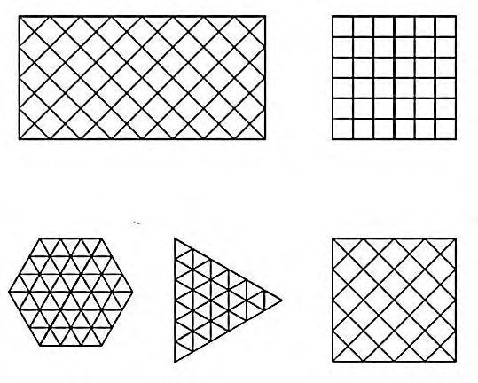
Рисунок 7.1 - Перекрестные системы покрытий
- опирать на колонны, расположенные по периметру, шагом от 6 до 12 м, без устройства контурных ферм;
- предусматривать разгружающие консольные свесы, вылет которых не должен превышать 0,25 размера основного пролета (рисунок 7.2, а ) или в пять раз высоту плиты;
- устанавливать дополнительные опоры внутри плана покрытия, образуя многопролетную неразрезную систему, применяя колонны с развитыми капителями или пространственные опоры.
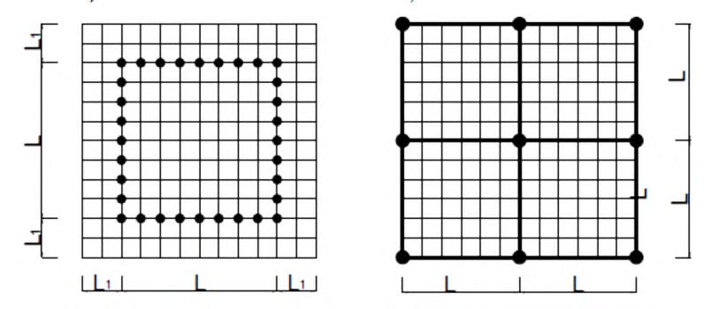
Рисунок 7.2 - Варианты опирания перекрестных систем покрытия
Верхние пояса ферм следует выполнять из прокатных двутавров; нижние пояса - из прокатных двутавров, парных уголков или швеллеров; раскосную решетку -из парных уголков. Все элементы допускается выполнять из круглых или прямоугольных гнуто-сварных профилей. В балочных перекрестных покрытиях элементы следует принимать из двутавров прокатных или сварных.
Пояса ферм одного направления необходимо располагать над поясами ферм другого направления, при этом длину фермы одного направления принимают на весь пролет, а в ортогональном направлении - по размеру ячеек.
- в монтажных узлах на рисунках 7.3, а, б, в , сходятся отправочные марки ферм длиной, равной размеру ячейки. В качестве основного соединительного элемента используют гнутый фланец при наличии или отсутствии диафрагмы жесткости (рисунок 7.3, а , б ) или уголковые коротыши (рисунок 7.3, в ) с накладками;
- в монтажных узлах на рисунке 7.3, г , прерываются фермы только одного направления, с поэтажным расположением пересекающихся поясных элементов.
Во всех вариантах следует применять болты класса точности В. Узлы пересечения перекрестных балок следует проектировать аналогично конструкциям балочных клеток.
Рисунок 7.3 - Схемы узлов пересечения стальных перекрестных ферм
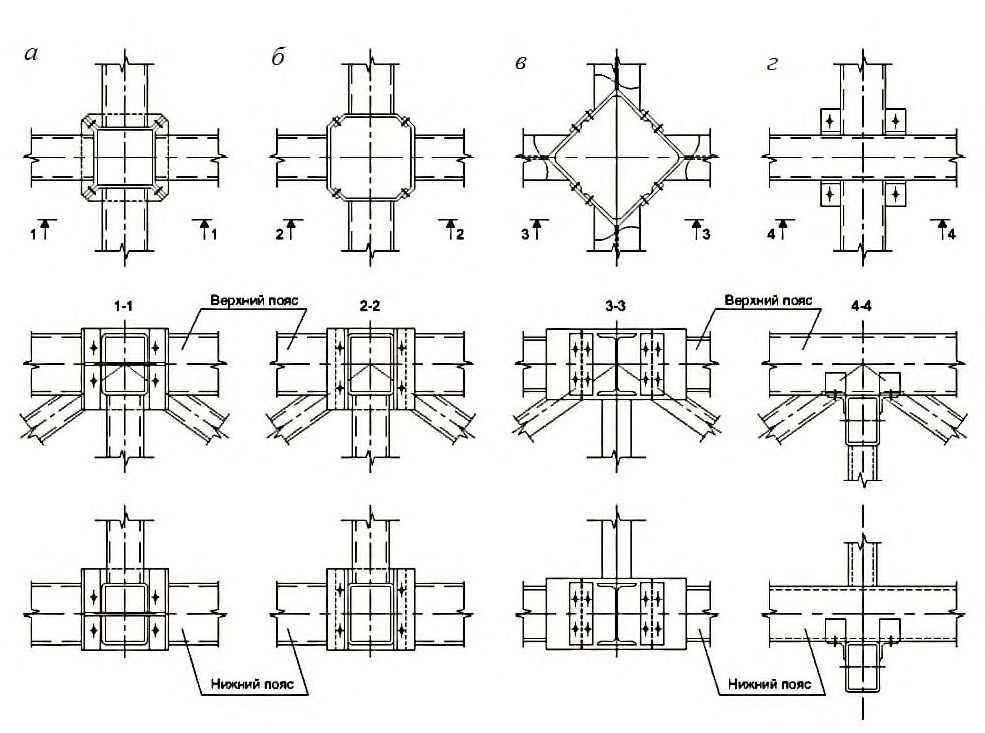
СП 1325800.2020
7.3Двухслойные стержневые (структурные) плиты
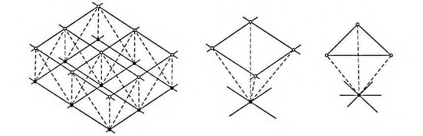
а - общий вид; б, в - повторяющаяся ячейка с квадратным или треугольным основанием
Рисунок 7.4 - Структурная плита
Наиболее характерные структурные стержневые системы (схемы стержневых структурных плит) показаны на рисунке 7.5.
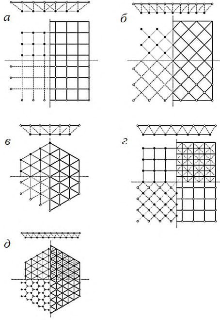
а, б - поясная сетка с ортогональными ячейками; в - поясная сетка с треугольными ячейками; г - сетка с поясами, сдвинутыми на половину ячейки; д - смешанная сетка, в которой одна состоит из шестиугольников, а другая - из треугольников.
Условные обозначения: верхние пояса - жирная сплошная линия; нижние пояса тонкая сплошная линия; элементы решетки - пунктирная линия; верхние узлы - полые кружки; нижние - сплошные кружки
Рисунок 7. 5 -Схемы стержневых структурных плит
- стержней размером на ячейку;
- короткоразмерных элементов решетки и длинноразмерных поясов;
- плоских или трехгранных ферм одного направления и доборных элементов другого направления;
- пространственных стержневых пирамид.
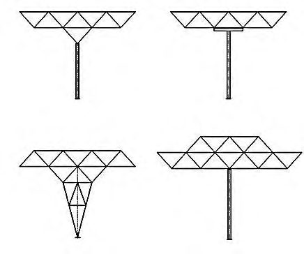
Рисунок 7.6 -Схемы опор
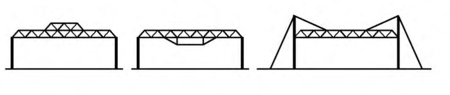
а - трехслойная структура; б - структура усиленная шпренгелем; в - структура подвешенная вантами к колоннам
Рисунок 7.7 - Схемы перекрытия больших пролетов
Подстропильные конструкции следует выполнять в виде плоских ферм, ригелей рамы или в виде пространственной конструкции. Для обеспечения необходимой жесткости подстропильной конструкции ее высоту следует принимать больше высоты структурной плиты.
7.4Цилиндрические оболочки (своды)
Рисунок 7.8 Цилиндрические сетчатые своды
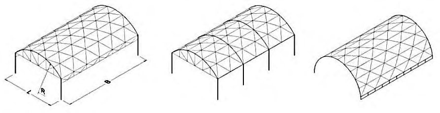
СП 1325800.2020
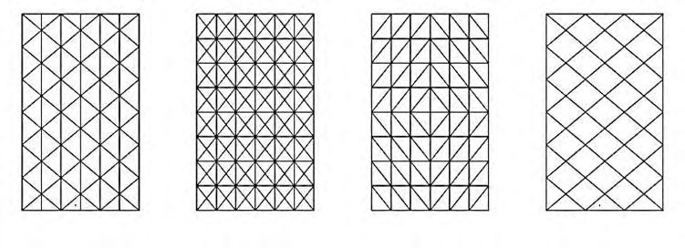
Рисунок 7.9 - Системы сеток сводчатого покрытия
7.5Сетчатые оболочки двойной кривизны
Сетчатые оболочки двойной кривизны следует проектировать из однотипных стержневых и узловых элементов, однослойными или двухслойными, соответственно с жесткими или шарнирными узлами, с треугольными, квадратными или ромбическими ячейками.
Сочлененные оболочки образуют комбинациями различных поверхностей (рисунок 7.10). Каждый из секторов сочлененной оболочки по границе должен быть обрамлен бортовым элементом. Возможны варианты покрытий с плавным переходом от одной поверхности к другой, в том числе разной кривизны. а а, б - нулевой гауссовой кривизны; в, г, д - положительной гауссовой кривизны; е, ж - отрицательной гауссовой кривизны
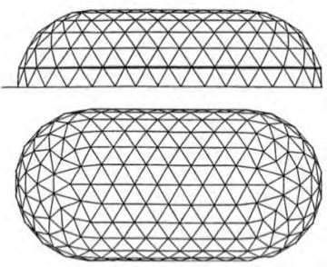
Рисунок 7.10 - Сочлененные оболочки с пересечением различных поверхностей
7.5.1 Сетчатые оболочки положительной гауссовой кривизны
7.5.1.1 Оболочки положительной гауссовой кривизны следует создавать высечкой из сферической или эллипсоидной поверхности покрытия на треугольном, квадратном, многоугольном или овальном плане (рисунок 7.11).
СП 1325800.2020
7.5.1.2 Оболочки следует использовать в покрытиях пролетом: однослойные до 30 м, а двухслойные до 150 м. Стрелу подъема оболочки следует принимать в интервале от 1/10 до 1/4 пролета, а расстояние между поясами двухслойной оболочки от 1/80 до 1/30 пролета.
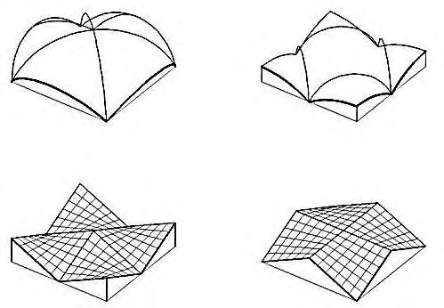
а - на треугольном плане; б - на квадратном плане; в - на многоугольном плане
Рисунок 7.11 - Сетчатые оболочки положительной гауссовой кривизны
7.5.1.3 По контуру оболочек необходимо предусматривать диафрагмы в виде арок, ферм или контурных криволинейных ребер (рисунок 7.12). Арки и фермы следует применять при опирании покрытия по углам на колонны. При частом расположении колонн по периметру здания или при опирании оболочки на стены следует применять контурные криволинейные ребра. Высоту поперечного сечения контурных ребер и арок следует назначать 1/60 пролета.
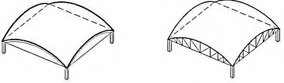
Диафрагмы в виде: а - арок; б - ферм; в - криволинейных ребер со стойками
Рисунок 7.12 - Диафрагмы по контуру оболочек положительной гауссовой кривизны
7.5.2 Сетчатые оболочки отрицательной гауссовой кривизны
7.5.2.1 Оболочки отрицательной гауссовой кривизны следует создавать высечкой из поверхности гиперболического параболоида покрытия (рисунок 7.13) на квадратном, ромбическом, овальном или более сложном плане, в том числе сочлененные (рисунок 7.10).
Рисунок 7.13 - Поверхность оболочки отрицательной гауссовой кривизны
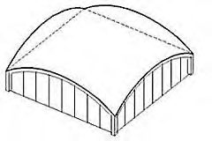
7.5.2.2 Оболочки отрицательной гауссовой кривизны (рисунок 7.13) следует применять в покрытиях пролетом ( L ): однослойные до 18 м, а двухслойные до 100 м. Стрелу провиса f 1 оболочки следует принимать от L /10 до L /4, а расстояние между поясами двухслойной оболочки от L /80 до L /30.
7.5.2.3 По контуру оболочек необходимо предусматривать контурные ребра (рисунок 7.14). Горизонтальный размер сечения ребер следует принимать от L /60 до L /40 пролета, вертикальный - вдвое меньше, при наличии периметральных стоек. Нижние узлы контура покрытия необходимо соединять затяжкой или устанавливать в этих точках пилоны.
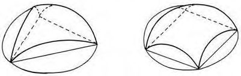
1 - оболочка; 2 - контурные ребра
Рисунок 7.14 - Оболочка отрицательной гауссовой кривизны
7.6Купольные конструкции
Отношение высоты купола h к диаметру D , следует принимать от 1/8 до 1/2. Размер ячейки поясных сеток следует назначать с учетом конструкции кровли и наличия прогонов, которые следует опирать на верхний пояс радиальных или кольцевых элементов.
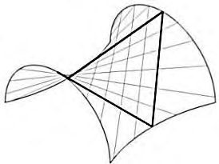
1 - нижний опорный контур; 2 - оболочка; 3 - верхний опорный контур
Рисунок 7.15 - Конструктивная схема купола
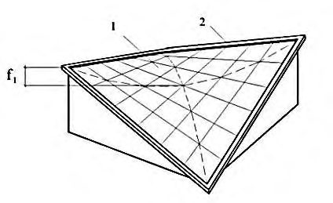
Рисунок 7.16 - Нижнее опорное кольцо
7.7Особенности расчетов однослойных пространственных стержневых систем
- варианта конструктивного решения (однослойного или двухслойного);
- кривизны геометрии поверхности;
- степени статической неопределимости конструктивной схемы;
- способа опирания конструкции;
- варианта нагружения, в том числе местного.
Различные формы потери устойчивости однослойных пространственных стержневых систем приведены на рисунке 7.17.
- потеря устойчивости отдельного стержня (рисунок 7.17, а );
- местная потеря устойчивости системы или прощелкивание в узле, объединяющем несколько стержней (рисунок 7.17, б ). Этот случай возможен, когда отношение t/R (где t - эквивалентная толщина стержневой оболочки, R - радиус кривизны оболочки) весьма мало;
- общая потеря устойчивости всей структуры (рисунок 7.17, в ). а - потеря устойчивости отдельного стержня; б - местная потеря устойчивости или прощелкивание в узле, объединяющем несколько стержней; в - общая потеря устойчивости всей структуры
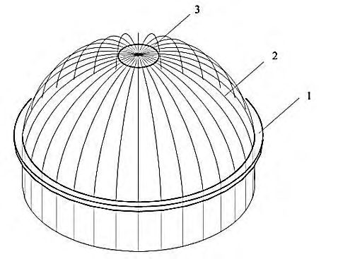
Рисунок 7.17 - Различные формы потери устойчивости однослойных пространственных стержневых систем
- а) в стержневой системе с шарнирным соединением (рисунок 7.18) критическую равномерно распределенную нагрузку q cr, следует определять по формуле
AEl/(
где А - площадь сечения стержня, мм² ;
СП 1325800.2020
Е - модуль упругости материала стержней, Н/мм² ;
Ɩ - длина стержня, мм;
R - радиус эквивалентной сферической оболочки, на поверхности которой находятся точки В - А - В, мм. б) критическую силу Pcr для треугольной стержневой сетки, с элементами одинакового сечения, в случае равномерно распределенной нагрузки, следует определять по формуле
где R - радиус кривизны срединной поверхности оболочки в рассматриваемой области, мм; r - радиус инерции сечения стержня, мм;
B э - эквивалентная изгибная жесткость системы, принимают в соответствии с таблицей 7.1
Таблица 7.1 Эквивалентная изгибная жесткость В э
| α | 0,031 | 0,0625 | 0,125 | 0,25 | 0,5 | 1 | 2 | 4 | 8 | 16 | 32 | 64 |
|---|---|---|---|---|---|---|---|---|---|---|---|---|
| В э | 0,868 | 0,873 | 0,886 | 0,950 | 1,176 | 1,850 | 3,150 | 4,830 | 6,480 | 7,350 | 7,800 | 7,900 |
Рисунок 7.18 - Схема местной потери устойчивости (прощелкивание) в стержневой системе с шарнирным соединением
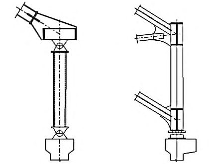
8Вантовые (висячие) системы
8.1Основные положения
- по принципиальной конструктивной схеме;
- форме сооружения в плане и геометрии поверхности покрытия;
- методу стабилизации покрытия;
- способу восприятия распора усилий с пролетной конструкции;
- материалу несущих растянутых и контурных элементов.
Большой класс комбинированных конструкций из гибких растянутых вант и сжато-изогнутых жестких элементов, представлен в разделе 10.
8.1.2.1 Конструктивные схемы . Висячие конструкции разделяют на линейные и пространственные.
Линейные системы работают в вертикальной плоскости, а их пространственную работу следует обеспечивать второстепенными ортогональными элементами.
Пространственные системы работают в двух направлениях. Их пространственную работу следует обеспечивать граничными условиями, наличием контурных несущих элементов (балки, фермы, арки, диафрагмы и т.п.) или гибких элементов (трос-подборов).
По типу конструктивной схемы выделяют:
- одно- и двухслойные системы;
- жесткие ванты (висячие фермы и балки);
- системы типа «велосипедное колесо»;
- тросовые сетки.
8.1.2.2 Форма плана. Висячие конструкции покрытий имеют разнообразную форму плана - квадрат, прямоугольник, круг, овал и т.д., а также более сложное комбинированное очертание.
8.1.2.3 Форма поверхности висячих покрытий имеет нулевую, положительную или отрицательную кривизну или в виде комбинации оболочек с одинаковой или различной формой поверхности.
Стрелу провиса вант f следует назначать с учетом следующих факторов: с уменьшением f уменьшается объем сооружения; снижаются требуемые величины параметров, обеспечивающих стабилизацию покрытия; но при этом возрастают усилия в вантах и опорном контуре.
8.1.2.4 Методы стабилизации покрытия :
- увеличение собственной массы покрытия или пригруз;
- предварительное напряжение системы;
- введение в конструкцию покрытия изгибно-жестких элементов.
8.1.2.5 Способы восприятия распора усилий с пролетной конструкции :
- с замкнутым опорным контуром - распоры воспринимают в уровне покрытия и на нижележащие конструкции передаются в основном вертикальные усилия;
- с разомкнутым опорным контуром - висячие покрытия передают усилия распора на каркас здания, контрфорсы, пилоны или оттяжки с анкерными якорями. В контуре в виде арок или ломаных балок возникают распоры, которые следует воспринимать затяжками или контрфорсами.
8.1.2.6 Материалы. В качестве материала несущих растянутых элементов следует применять стальные канаты, пряди из высокопрочной проволоки, растянутые круглые стержни, висячие элементы или фермы. Опорные конструкции следует выполнять из железобетонных или стальных контуров, рам, арок, трос-подборов, стоек с оттяжками и т.п.
Для элементов висячих конструкций согласно СП 20.13330.2016 (пункт 15.2.3) вертикальные прогибы (перемещения) от постоянных, длительных и кратковременных нагрузок не должны превышать 1/150 пролета.
При проектировании висячих систем в целом, так и отдельных конструктивных элементов, следует учитывать проблемы аэродинамической неустойчивости.
8.2Однослойные вантовые системы
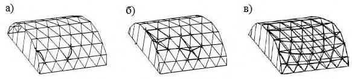
Рисунок 8.1 - Однопоясные системы
Предварительное напряжение однослойных висячих оболочек с железобетонными плитами ограждения следует осуществлять:
- замоноличиванием стыков плит под временным пригрузом;
- натяжением канатов после замоноличивания стыков плит;
- непрерывным замоноличиванием швов бетоном на расширяющемся цементе, после укладки всех плит.
Требования к проектированию висячих железобетонных оболочек следует принимать в соответствии с СП 387.1325800.
- с жесткими нитями (криволинейные фермы, прокатные или сварные балки) со стрелой провиса от 1/10 до 1/7 пролета/диаметра таких покрытий. Высоту сплошного сечения следует принимать от 1/70 до 1/50 пролета/диаметра, высоту висячей фермы - от 1/25 до 1/20 пролета/диаметра покрытия;
- с применением гибких вант, стабилизацию которых следует осуществлять с помощью поперечных балок или ферм, притягиваемых по концам к фундаментам или опорам (см. рисунок 8.2);
- с поверхностью отрицательной гауссовой кривизны - гипары и шатровые покрытия.
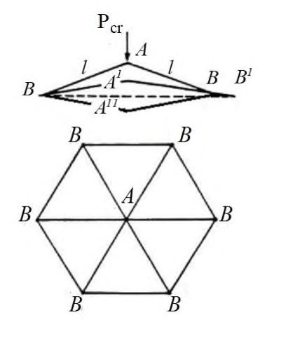
1 - провисающее вантовое покрытие; 2 - поперечные балки или фермы; 3 - тяги
Рисунок 8.2 - Предварительное напряжение с помощью поперечных элементов
8.3Двухслойные вантовые системы
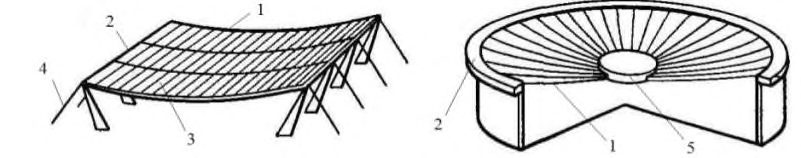
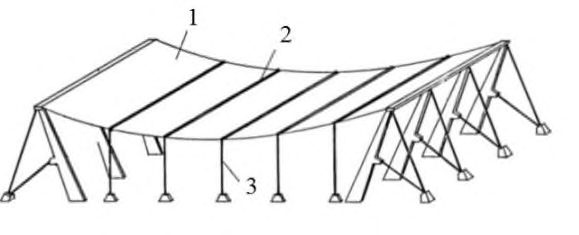
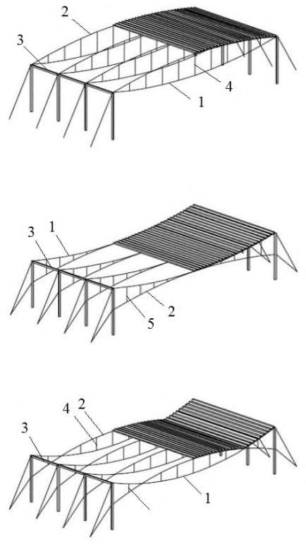
- наружный опорный контур; а - выпуклые; б - вогнутые; в - выпукло-вогнутые; 1 - несущие ванты; 2 - стабилизирующие ванты; 3 4 - сжатые распорки; 5 - растянутые подвески
Рисунок 8.3 - Двухпоясные вантовые системы
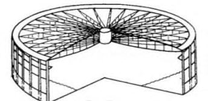
а - в радиальном направлении; б - в двух направлениях; в - в трех направлениях;
Рисунок 8.4 - Варианты расположения вантовых ферм для покрытий на круглом плане
Для сооружений с прямоугольным планом вантовые фермы следует располагать параллельно (рисунок 8.5, а ) или в радиальном направлении (рисунок 8.5, б ) с применением троса-подбора, передающего распор в углы покрытия.
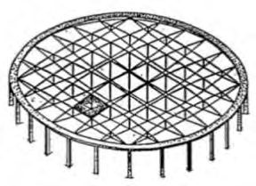
- в радиальном направлении; а - в одном направлении; б
1 - несущие ванты; 2 - наружный контур; 3 - трос-подбор
Рисунок 8.5 - Варианты расположения вантовых ферм для покрытий на прямоугольном плане
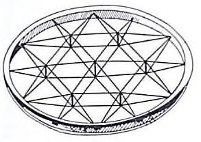
1 - несущие ванты; 2 - кровельные панели, 3
- стабилизирующие ванты
Рисунок 8.6 - Двухпоясные вантовые системы на прямоугольном плане квазицилиндрической формы
Рисунок 8.7 - Схема восприятия распора
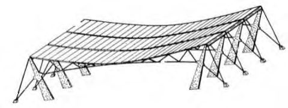
Рисунок 8.8 - Варианты узла крепления тросов к наружному контуру
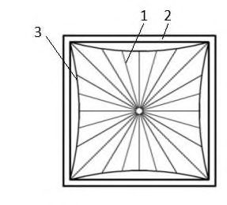
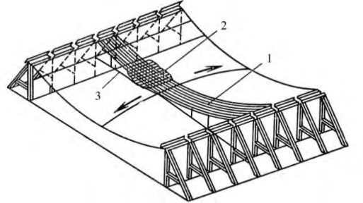
а - с упорами; б - с переходными деталями;
1 - внутреннее кольцо; 2 - трос или стержень; 3 - переходная деталь
Рисунок 8.9 - Варианты узла крепления троса к внутреннему кольцу
1 - трос; 2 - панель; 3 - опорный столик
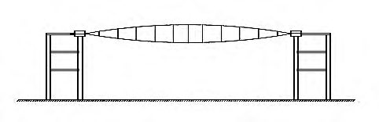
Рисунок 8.10 - Узел опирания кровельного настила на трос
8.4Вантовые системы типа «велосипедное колесо»
- сжатый одинарный наружный контур, растянутый двойной внутренний контур в виде центрального барабана, парные радиальные ванты, сходящиеся в центральном барабане (рисунок 8.11, а );
- сжатый наружный контур из двух кольцевых элементов, расположенных друг над другом и объединенных распорками, парные радиальные ванты, сходящиеся в центральном кольце (рисунок 8.11, б ).
Первый вариант рационален по расходу материалов, в нем проще обеспечивается наружный водоотвод.
Конструкция покрытия над трибунами стадионов имеет центральный проем над игровым полем (рисунок 8.11, в , г ). В таких покрытиях очертание внутреннего кольца, следует принимать подобным очертанию наружного контура. а б а, б - для крытых арен; в, г - для покрытий с центральным проемом Рисунок 8.11 - Варианты конструкций покрытий типа «велосипедное
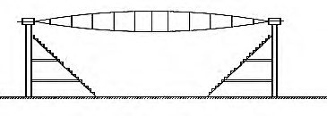
колесо»
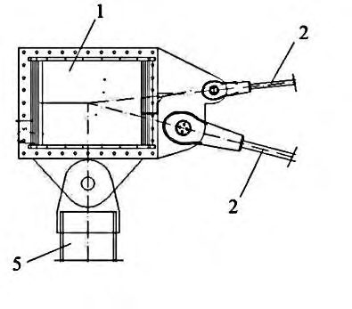
Рисунок 8.12 - Варианты схем радиальных вантовых ферм покрытия
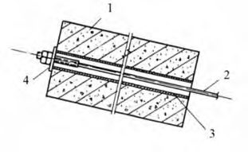
а - разрез; б - план
1 - тросы внутреннего кольца; 2 - соединительная деталь (литая или сварная); 3, 4 - тросы вантовой фермы; 5 - вилочный анкер; 6 - ось шарнира
Рисунок 8.13 - Узел крепления радиальных тросов к внутреннему кольцу из набора тросов
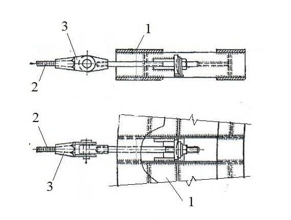
а - с распорками; б - с подвесками; 1 - несущие ванты; 2 - стабилизирующие ванты; 3 - распорка; 4 - шарнир; 5 - проушина; 6 - подвеска
Рисунок 8.14 -Узлы соединения радиальных вант с распорками/подвесками
8.5Вантовые сети
Рисунок 8.15 - Вантовые сетки с различной формой ячеек
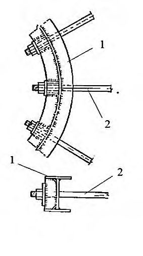
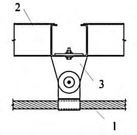
N н - усилия в несущих вантах; N с - усилия в стабилизирущих вантах
Рисунок 8.16 - Схема предварительного напряжения вантовых сеток
Рисунок 8.17 - Узлы крепления в местах пересечения тросов
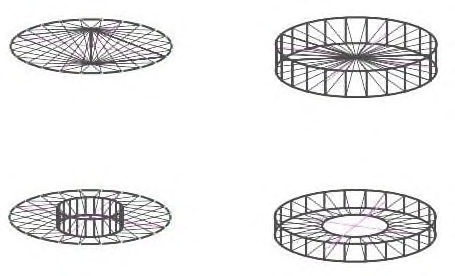
Рисунок 8.18 - Вантовая сеть на замкнутом жестком контуре на круглом/овальном плане
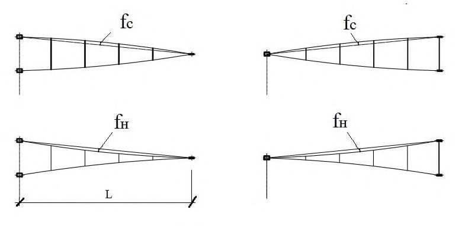
Геометрию ломанного рамного контура следует назначать исходя из обеспечения рекомендованных в 8.5.2 стрел провиса/подъема несущих/стабилизирующих вант. Нижние углы контура следует объединять затяжками или в этих местах устанавливать пилоны.
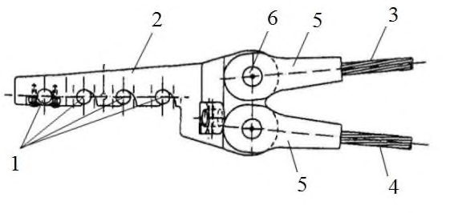
а - для отдельно стоящих сооружений; б - для сочлененных оболочек
Рисунок 8.19 - Вантовая сеть на замкнутом контуре на прямоугольном плане
Рисунок 8.20 - Седловидное покрытие с двумя наклонными арками
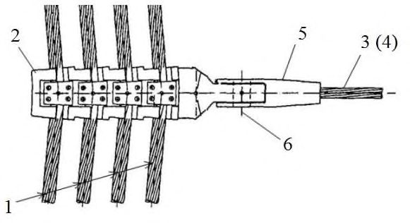
Арки могут быть установлены наклонно или вертикально с наружными оттяжками (рисунок 8.21).
Рисунок 8.21 - Седловидное покрытие с вертикальными арками и оттяжками
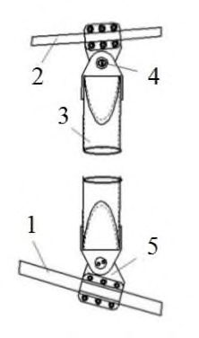
СП 1325800.2020
Сочлененные покрытия следует формировать пересечением нескольких наружных и внутренних арок (рисунок 8.22, а , б ) или не иметь переломов по линиям сопряжения поверхности (рисунок 8.23). а б
Рисунок 8.22 Сочлененные покрытия из нескольких наружных и внутренних арок
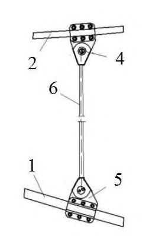
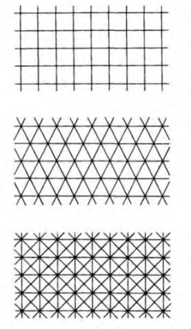
Рисунок 8.23 - Вантовая сеть с арочными контурами и кусочно-гладкой поверхностью
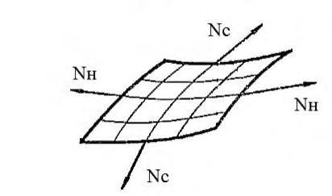
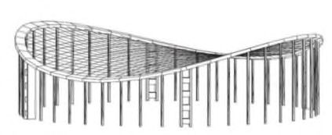
а - план; б - разрез
Рисунок 8.24 Шатровая сетчатая вантовая оболочка
Внутреннее кольцо диаметром от 0,05 до 0,15 наружного диаметра покрытия следует проектировать металлическим из прокатных или сварных профилей (рисунок 8.25).
Рисунок 8.25 Узел крепления радиальных тросов к оголовнику центральной опоры шатровой оболочки
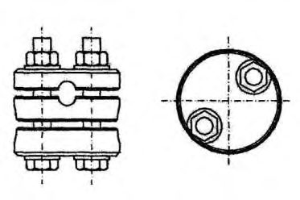
- с двумя стойками; б
- с четырьмя стойками
Рисунок 8.26 - Седлообразная вантовая сеть с гибким опорным контуром
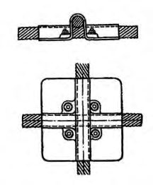
а
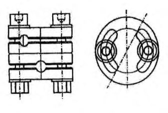
а - одностоечные; б - многостоечные регулярные
Рисунок 8.27 Вантовые шатровые сетки на гибком опорном контуре
9Мембранные (тонколистовые) висячие покрытия
9.1Основные положения
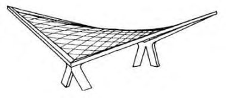
Рисунок 9.1 - План и форма поверхности отдельно стоящих покрытий
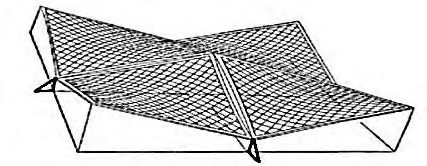
Рисунок 9.2 - План и форма поверхности составных покрытий
СП 1325800.2020
- увеличением собственной массы покрытия, в том числе с подвеской пригруза или технологического оборудования (рисунок 9.3, а );
- введением в конструкцию покрытия элементов, обладающих изгибной жесткостью (рисунок 9.3, б, в );
- предварительным напряжением оболочки (рисунок 9.4). а б в а - пригрузом; б, в - с использованием изгибно-жестких элементов; 1 - мембрана; 2 - пригруз; 3 - кольцевой кран; 4 - основные (продольные или радиальные) ребра; 5 - вспомогательные (поперечные или кольцевые) ребра
Рисунок 9.3 - Стабилизация покрытий
- 9.1.5.1 Увеличение собственной массы покрытия следует назначать с учетом обеспечения растягивающих напряжений в мембране при ветровом отсосе, уменьшения доли неравномерных временных нагрузок. Как правило, конструкция кровли совместно с мембраной и подвесным технологическим оборудованием обеспечивают требуемую для стабилизации массу покрытия.
- 9.1.5.2 Стабилизирующие изгибно-жесткие элементы следует располагать по линиям главных кривизн оболочки с шагом от 6 до 12 м, увязывать с шириной полотнища мембраны, использовать как основание для монтажа мембраны, подвески акустического потолка. Ребра следует выполнять из прокатных или сварных элементов или в виде висячих ферм.
- 9.1.5.3 Стабилизацию тонколистовых покрытий предварительным напряжением следует осуществлять в зависимости от формы поверхности:
- оболочки отрицательной кривизны - притягиванием мембраны к контуру или изменением положения контура (рисунок 9.4, а, б );
- оболочки нулевой или положительной гауссовой кривизны -с помощью системы вантовых ферм (рисунок 9.4, в, г, д );
- цилиндрические оболочки - притягиванием концов поперечных ребер к основанию (рисунок 9.4, е ). а б в г д е а - притягиванием мембраны к контуру; б - изменением геометрии покрытия; в, г, д - с помощью натяжения вантовых ферм; е - притягиванием поперечных балок к основанию; 1 - мембрана; 2 - стабилизирующие ванты; 3 - центральный пригруз; 4 - оттяжки
Рисунок 9.4 Стабилизация покрытия предварительным натяжением
- 9.1.8.1 Направляющие элементы длиной на пролет (или половину пролета для круглых или овальных в плане покрытий) следует располагать вдоль мембранных полотнищ шагом равным их ширине или в два раза чаще. Площадь сечения направляющих элементов следует включать в работу пролетной конструкции, обеспечивая совместность их работы.
- 9.1.8.2 Поперечные элементы «постели» (гнутые или прокатные профили), объединяющие отдельные направляющие в пространственную систему, следует устанавливать шагом от 3 до 6 м. Их сечение определяют расчетом на нагрузку от собственного веса полотнища мембраны, ограничивая относительный прогиб до 1/200 пролета. Крепление поперечных элементов к направляющим следует выполнять по неразрезной схеме.
а - без «постели»; б - с «постелью», внахлестку полотнищ мембраны; в - с «постелью», внахлестку на направляющих элементах; 1 - мембрана; 2 - направляющие элементы «постели»; 3 - болты или сварные точки; 4 - сварка
Рисунок 9.5 - Узлы сопряжения полотнищ мембраны
1 - мембрана; 2 - лист усиления
Рисунок 9.6 - Узел усиления проемов в мембране
а - к элементам «постели»; б - к мембране; 1 - мембрана; 2 - поперечный элемент «постели»; 3 - распределительная шайба; 4 - подвеска
Рисунок 9.7 - Узлы крепления подвесок к мембране
Рисунок 9.8 - Железобетонный опорный контур
Рисунок 9.9 - Металлический опорный контур
СП 1325800.2020
Плоскость опорного столика следует выполнять с наклоном, соответствующим углу касательной к поверхности мембранной оболочки в месте примыкания к контуру под максимальной нагрузкой. Линия действия усилий в мембране должна иметь минимальные отклонения от центра тяжести поперечного сечения контура. Опорный столик следует назначать толщиной не менее 1,3 толщины мембраны, шириной до 400 мм, подкрепленный вертикальными ребрами не реже чем через 300 мм (рисунок 9.10, а ). Присоединение мембраны к опорному столику допускается выполнять через листовую подкладку шириной не менее 150 мм (рисунок 9.10, б ).
- сечение контура необходимо определять расчетом с учетом податливости;
- при монтаже в контуре могут возникать моменты, превышающие моменты от эксплуатационных нагрузок;
- устойчивость контура в покрытиях на круглом и овальном плане обеспечивается его совместной работой с мембраной. Прямоугольный в плане контур, с недостаточной жесткостью, может потерять устойчивость;
- мембранное покрытие в своей плоскости является жестким диском;
- колонны и стены кроме вертикальных нагрузок воспринимают горизонтальные воздействия от перемещения контура (обжатие, изгибные деформации и температурные воздействия, давление ветра на стеновое ограждение и, при наличии, сейсмические воздействия);
- колонны, при λ ≥ 100, следует соединять с опорным контуром и фундаментом жестко, а при λ < 100 шарнирно с фундаментами и жестко с опорным контуром.
1 - мембрана; 2 - опорный контур; 3 - опорный столик; 4 - накладка
Рисунок 9.10 - Узел примыкания мембраны к опорному контуру
- шарнирного сопряжения колонн с контуром из плоскости стен, и соотношений изгибных жесткостей колонн и контура в плоскости стен;
- соединения колонн с фундаментами в расчетной схеме в соответствии с проектным решением (шарнир, упругое или жесткое защемление).
На стадии монтажа колонну следует рассматривать как консоль, защемленную в фундаменте. Если высота колонн более чем в 1,5 раза превышает шаг их расположения в плане, то по периметру сооружения следует вводить дополнительные горизонтальные распорки, уменьшающие расчетные длины стоек.
- вертикальных связей между колоннами по осям симметрии сооружения;
- вертикальных диафрагм, совмещенных со стенами лестничных клеток или другими конструктивными элементами. В круглых (овальных) в плане покрытиях контур следует крепить к вертикальным диафрагмам с помощью связей, допускающих радиальные перемещения, но препятствующих его тангенциальным перемещениям.
СП 1325800.2020
9.2Мембранные висячие покрытия разных типов. Особенности конструктивных решений
9.2.1 Цилиндрические (нулевой гауссовой кривизны) мембранные висячие оболочки
- 9.2.1.1 Цилиндрические оболочки разделяются на:
- покрытия с замкнутым контуром на прямоугольном (рисунок 9.11, а ) или овальном (рисунок 9.11, б ) плане;
- покрытия с разомкнутым контуром прямоугольные в плане (рисунок 9.11, в ). В этом случае пролетную часть следует подкреплять вантовыми (рисунок 9.11, г ) или жесткими фермами.
Покрытия с замкнутым контуром возможно выполнять составным, в виде комбинации цилиндрических поверхностей (рисунок 9.11, д ).
- 9.2.1.2 Оболочки с замкнутым прямоугольным контуром следует применять для покрытий пролетом до 120 м, вытянутых в плане вдоль провисающей стороны покрытия при соотношении сторон 1 ÷ 5 или вдоль прямолинейной образующей при соотношении сторон 1 ÷ 1,5.
Овальные в плане оболочки следует применять для покрытий пролетом до 200 м с соотношением осей до 1,5 и расположением провисающего направления вдоль короткой оси.
- 9.2.1.3 Цилиндрические покрытия следует выполнять со стрелой провиса f/L от 1/20 до 1/10. В них следует предусматривать мероприятия по их стабилизации в соответствии с 9.1.5. в г д
а, б - на прямоугольном и овальном плане с замкнутым опорным контуром; в, г - на прямоугольном плане с разомкнутым опорным контуром; д - составные цилиндрические оболочки на прямоугольном плане
Рисунок 9.11 - Типы конструкций цилиндрических мембранных покрытий
9.2.1.4 Цепные усилия с цилиндрической мембраны с разомкнутым контуром, работающей в одном направлении, следует воспринимать нижележащими конструкциями пилонов (рисунок 9.11, в ) или оттяжками (рисунок 9.11, г ). Рационально в качестве опор использовать рамные конструкции пристроек, трибун и т.п.
9.2.1.5 Пролетная конструкция в цилиндрических оболочках с замкнутым контуром работает на растяжение в двух направлениях. Поверхность оболочки на овальном (рисунок 9.12) или прямоугольном (рисунок 9.13) плане следует задавать с небольшой вспарушенностью. Стрелу провиса f 1 следует принимать в интервале от а /10 до а /5; стрелу вспарушенности f 2 = f 1/5, где а - половина пролета покрытия в провисающем направлении.
9.2.1.6 Пролетную конструкцию оболочек с замкнутым контуром на прямоугольном плане следует собирать на ортогональной системе элементов «постели» из прямоугольных полотнищ, располагая их, в зависимости от направления максимальных усилий, вдоль (рисунок 9.13, а ) или поперек пролета (рисунок 9.13, б ).
В углах контур следует уширять или вводить распорки для восприятия изгибающих моментов. Длину углового уширения контура следует принимать 0,2 пролета, соответствующую ширину - в три раза больше ширины контура в пролетной части. Прямолинейные бортовые элементы следует выполнять повернутыми внутрь по касательной к поверхности оболочки в месте примыкания к контуру.
1 - мембрана; 2 - элементы «постели»; 3 - опорный контур; 4 - дополнительная затяжка; а половина пролета покрытия в провисающем направлении; b половина пролета покрытия в вспарушенном направлении
Рисунок 9.12 - Цилиндрическое покрытие на овальном плане
а - металлический опорный контур и продольное расположение полотнищ мембраны; б - железобетонный опорный контур и поперечное расположение полотнищ мембраны; Размер покрытия в плане: 2 а в провисающем направлении , 2 b - в вспарушенном направлении; 1 - мембрана; 2 - элементы «постели»; 3 - опорный контур; 4 - распорки; 5 - регулирующая монтажная затяжка
Рисунок 9.13 Цилиндрическое покрытие на прямоугольном плане
9.2.1.7 Сочлененные оболочки, образованные комбинацией цилиндрических поверхностей (рисунок 9.11, д ), следует применять для покрытий зданий пролетом до 100 м с соотношением сторон от 1:1 до 1:2.
При проектировании следует учитывать, что пролетная конструкция в этих системах в каждом из секторов между диагональными элементами, работает в одном направлении, а цепные усилия с мембраны через диагональные элементы передают в углы опорного контура. Поверхность оболочки следует задавать пониженной в середине сторон контура, по отношению к центру покрытия. Крепление мембраны к криволинейному контуру следует осуществлять с применением листовых компенсаторов.
9.2.2 Тонколистовые висячие оболочки положительной гауссовой кривизны
9.2.2.1 Провисающие мембранные оболочки на круглом или овальном плане следует применять в покрытиях пролетом до 250 м. Относительную стрелу провиса следует назначать от D /30 до D /20, меньшая величина соответствует покрытиям меньших пролетов.
9.2.2.2 Пролетную конструкцию следует собирать из прямоугольных или трапециевидных тонколистовых полотнищ, подкрепленных ортогональной (диаметром до 100 м) или радиально-кольцевой системой (диаметром более 100 м) элементов («постель») (рисунок 9.14). В последнем случае в середине покрытия следует устанавливать кольцо. а - ортогональная система; б - радиально-кольцевая система; в - разрез; 1 - контур; 2 - мембрана; 3 - направляющие; 4 - второстепенные элементы; 5 - кольцо
Рисунок 9.14 Схемы расположения подкрепляющих элементов
- 9.2.2.3 Площадь сечения направляющих элементов, следует включать в работу оболочек, что при радиально-кольцевой системе «постели» обеспечивает переменную приведенную толщину пролетной конструкции соответствующую эпюре радиальных усилий в оболочке.
- 9.2.2.4 Форму центральной плиты следует принимать подобной очертанию наружного контура, а размеры определять из условия закрепления в ней радиальных элементов подкрепления и мембраны, но не менее 0,1 диаметра покрытия. Центральную плиту следует проектировать плоской из прокатных или сварных профилей (рисунок 9.15, а, б ). Внутри кольца следует располагать балочную клетку. Мембрана должна примыкать к плите по центру контура (рисунок 9.15, в ), натяжные болты (хвостовики), которыми заканчиваются радиальные направляющие «постели», следует устанавливать со стороны центральной плиты (рисунок 9.15, г ). а
а - план плиты; б - разрез; в - узел примыкания мембраны; г - узел примыкания радиального элемента «постели»; 1 - мембрана; 2 - контурная балка центральной плиты; 3 - балочная клетка; 4 - радиальный элемент «постели»; 5 - натяжной болт
Рисунок 9.15 - Центральная плита
9.2.3 Тонколистовые шатровые оболочки
- 9.2.3.1 Шатровые оболочки на круглом плане применяют в покрытиях зданий и сооружений пролетом от 30 до 350 м. Конструкция (рисунок 9.16) состоит из мембранной оболочки, наружного контура и внутреннего кольца, опертого на центральную опору. Мембрану следует подкреплять радиальнокольцевой системой «постели», которую включают в работу пролетной конструкции. Внутреннее кольцо следует устанавливать выше отметки наружного опорного контура, с учетом относительной стрелы подъема оболочки в интервале от D /15 до D /7. Общую устойчивость сооружения следует обеспечивать пространственной мембранной, изгибной жесткостью периметральных колонн и центральной опоры.
- 9.2.3.2 Геометрию шатрового покрытия следует определять, используя уравнение оси гибкой нити, подвешенной к двум точкам на разных уровнях, под действием трапецеидальной монтажной нагрузки. При этом необходимо соблюдение условия наклона касательной к меридиану оболочки в месте примыкания к наружному контуру - около 5 о для обеспечения наружного водоотвода.
1 - наружный опорный контур; 2 - мембрана; 3 - внутреннее кольцо; 4 - периметральные колонны; 5 - центральная опора; 6 - радиальные и кольцевые элементы «постели»
Рисунок 9.16 - Конструктивная схема шатрового мембранного покрытия
- 9.2.3.3 Внутреннее кольцо следует проектировать металлическим из прокатных или сварных профилей двутаврового сечения. Диаметр кольца следует определять из условия закрепления в нем радиальных направляющих элементов и мембраны или технологических требований в интервале от 0,05
СП 1325800.2020
до 0,15 наружного диаметра покрытия. Внутреннее кольцо следует свободно устанавливать на центральную опору. В период монтажа внутреннее кольцо должно быть зафиксировано временными креплениями.
- 9.2.3.4 Высоту опоры следует определять, как сумму высоты периметральных колонн и стрелы подъема покрытия. Для покрытий диаметром менее 100 м центральную опору допускается выполнять из трубобетона (рисунок 9.17).
1 - мембрана; 2 - натяжной болт; 3 - внутреннее кольцо; 4 - трубобетонная стойка
Рисунок 9.17 - Конструкция центральной опоры при диаметре покрытия до 100 м
При больших размерах покрытия центральную опору следует выполнять в виде круговой железобетонной рамы со стойками, объединенными кольцевыми ригелями, диаметром равным диаметру внутреннего кольца (рисунок 9.18). Крепление центральной опоры к фундаменту следует выполнять жестким.
1 - мембрана; 2 - внутреннее кольцо; 3 - центральная опора
Рисунок 9.18 - Конструкция центральной опоры при диаметре покрытия более 100 м
9.2.4 Мембранные оболочки седловидной формы
- 9.2.4.1 Мембранные оболочки седловидной формы следует применять:
- в покрытиях многопролетных зданий с укрупненной сеткой колонн 18×18, 24×24 м (рисунок 9.19, а, б );
- в покрытиях отдельно стоящих зданий в виде одной (рисунок 9.19 , в ) или системы сочлененных оболочек на прямоугольном (рисунок 9.1, ж ) или овальном (рисунок 9.2, е, ж, и ) планах пролетом от 30 до 100 м.
- 9.2.4.2 Седловидное покрытие состоит из пролетной конструкции (мембраны) и опорного контура в виде замкнутой прямоугольной в плане депланированной рамы, плоских арок или пространственных замкнутых кривых. Для восприятия горизонтальных усилий, передающихся с опорного контура на нижележащие конструкции, необходимо предусматривать постановку затяжек или пилонов, соединяющих нижние углы покрытия. в а - многопролетное покрытие из сочлененных оболочек; б - конструктивные элементы секции сочлененных оболочек; в - схема покрытия отдельно стоящего здания на прямоугольном плане; 1 - наружный опорный контур; 2 - внутренний опорный контур; 3 - ячейки (мембранные оболочки); 4 - затяжки
Рисунок 9.19 - Мембранные оболочки отрицательной гауссовой кривизны
9.2.4.3 Пролетную конструкцию собирают из тонколистовых прямоугольных полотнищ, располагаемых вдоль линейной образующей. Ширина полотнищ определяется геометрией поверхности покрытия, исходя из условия ограничения зазоров между стыкуемыми полотнищами и составляет менее 1/10 размера стороны покрытия. Стрелу провиса/подъема мембраны, в вогнутом и выпуклом направлении, следует принимать соответственно равной от 1/20 до 1/15 пролета.
9.2.4.4 При проектировании следует учитывать, что оболочка в одном из направлений всегда сжата, что приводит к потере ее местной устойчивости. Для предотвращения этого и включения в работу мембраны в обоих направлениях ее следует предварительно напрягать.
Для упрощения монтажа допускается применение оболочки без предварительного напряжения, работающей в основном в одном растянутом направлении.
9.2.5 Первоначально плоские мембранные оболочки
9.2.5.1 Такие оболочки следует применять в покрытиях многопролетных зданий с укрупненной сеткой колонн 18×18, 24×24 м (рисунок 9.20), а также отдельно стоящих зданий на прямоугольном или овальном плане пролетом от 30 до 70 м при соотношении сторон до 1:1,5.
9.2.5.2 Конструкцию следует собирать на спланированной поверхности земли или подмостях. После подъема покрытия на проектную отметку или раскружаливания мембрана провисает со стрелой провиса не менее 1/60 пролета. Большие складки в углах покрытия длиной до 1/10 диагонали следует удалять.
Рисунок 9.20 - Первоначально плоские многопролетные мембранные покрытия зданий с укрупненной сеткой колонн
9.2.5.3 Сопряжение бортовых элементов в углах следует выполнять с применением вутов, высотой не менее трети высоты контура и размером в плане не менее 1/10 его длины, располагая вут симметрично относительно нейтральной оси контурного элемента. В случае выполнения опорного контура из металла или сборного железобетона вуты допускается заменять распорками.
9.2.5.4 Мембрана, закрепленная по всему периметру к опорному контуру, обеспечивает его устойчивость в плоскости мембраны. В случае сравнительно гибкого контура он может потерять устойчивость в горизонтальной плоскости.
10Комбинированные системы
10.1Основные положения
10.2Арочно-вантовые системы
1 - жесткий криволинейный верхний пояс; 2 - растянутый нижний пояс; 3 - подвески; 4 - распорки; 5 - лучевые затяжки; 6 - веерные затяжки
Рисунок 10.1 - Варианты арочно-вантовых комбинированных систем
Рисунок 10.2 - Вариант сечения нижнего пояса из двух полос, расположенных вертикально
Возможны схемы, где вспарушенную затяжку объединяют с аркой при помощи подвесок (рисунок 10.1, а ), на которых следует устанавливать фаркопы для регулирования геометрии арки и предварительного натяжения затяжки. Предварительное напряжение комбинированной системы с криволинейным верхним поясом и провисающей затяжкой (рисунок 10.1, б ), объединенных сжатыми стойками следует выполнять за счет раздвижки стоек.
В веерной схеме (рисунок 10.1, д ) с точкой схода затяжек по середине пролета, подъем центрального узла пересечения затяжек, относительно опор, следует принимать равным четверти подъема верхнего арочного пояса, а число панелей верхнего пояса - до 9.
10.3Шпренгельные системы
1 - жесткий криволинейный верхний пояс; 2 - растянутый нижний пояс; 3 - V-образные стойки
Рисунок 10.3 - Комбинированная шпренгельная система
Рисунок 10.4 - Конструктивные узлы
1 - верхний пояс; 2 - нижний пояс; 3 - V-образные стойки; 4 - центральное ядро
Рисунок 10.5 - Пространственная комбинированная шпренгельная система
Рисунок 10.6 - Варианты пространственных комбинированных шпренгельных систем
10.4Подвесные и консольные системы
Рисунок 10.7 - Подвесные комбинированные системы
Рисунок 10.8 - Варианты конструктивных схем подвесных комбинированных систем
10.5«Тенсегрити»-системы
Рисунок 10.9 - Стержневая плита «Тенсегрити»
- диаметр покрытия до 250 м и выше, допускается овальный план;
- количество кольцевых участков от 3 до 6;
- количество секторов на плане покрытия от 8 до 24 с учетом диаметра купола и величины внешних нагрузок;
- уклон диагональных тросов в центре покрытия - между 13 и 17 ;
- отношение стрелы подъема (от уровня наружного опорного контура) к пролету (диаметру) покрытия от 1/12 до 1/8;
- провис конструкции ниже уровня наружного опорного контура, зависит от уклона диагональных тросов 1-го яруса;
- уровень предварительного напряжения определяется требованием обязательного растяжения всех тросов. а - поперечное сечение; б
- общий вид;
1 верхний радиальный пояс; 2 - кольцевой элемент; 3 - диагональный радиальный элемент; 4 - стойка; 5 - центральная ферма; 6 - наружный опорный контур
Рисунок 10.10 «Тенсегрити» купол Гейгера
а - общий вид; б - план;
1 - верхний радиальный пояс; 2 - кольцевой элемент; 3 - диагональный радиальный элемент; 4 - стойка; 5 - центральная ферма; 6 - наружный опорный контур
Рисунок 10.11 - «Тенсегрити» купол Фуллера
11Узлы и детали
11.1Основные положения
- пространственное расположение большого количества элементов, объединенных одним узлом, усложняет механизм взаимной передачи усилий;
- углы между осями смежных стержневых элементов, объединенных в узле, должны быть между 30 и 150 ;
- стесненное расположение примыкающих к узлу элементов, препятствующих выполнению болтовых и сварных соединений, а также осмотрам и восстановлению антикоррозионной защиты;
- исключение зон, в которых возможно скопление воды и загрязнений;
- сокращение до минимума количества монтажных узлов, с учетом вопросов транспортирования и монтажа.
- шарнирный узел, не передающий изгибающий момент;
- жесткий узел, не влияющий на результаты статического расчета;
- полужесткий узел, при котором следует учитывать влияние податливости узла на расчет.
Жесткие соединения элементов в узлах стержневых конструкций допускается принимать при расчете шарнирными, если при таком допущении конструкция сохраняет свою неизменяемость. При этом отношение высоты сечения к длине элементов должно быть, как правило, не менее 1:15.
11.2Узлы пространственных стержневых конструкций
- в двухслойных системах узловое соединение работает в основном на сжатие, а в однослойных системах узел воспринимает также изгибающие и крутящие моменты;
- расход металла на узлы пространственных стержневых конструкций составляет от 5 % до 7 %, а в некоторых системах - более 10 % от общего веса конструкции покрытия.
Для болтовых соединений характерна податливость соединений из-за разности диаметра отверстия в фасонке и диаметра болта.
Сварные соединения позволяют объединять разное количество элементов в пространстве практически под любым углом, при этом следует учитывать сложность их выверки и жесткие требования к длинам стержней.
11.3Узловые болты-шарниры
1 - вилкообразное анкерное устройство; 2 - канат; 3 - болт-шарнир
Рисунок 11.1 - Схема узлового болта-шарнира
Геометрию узлов растянутых элементов симметричного сечения для болтов-шарниров с проушиной типа «А» (рисунок 11.2, а ) или типа «Б» (рисунок 11.2, б ) следует определять следующими соотношениями:
Площадь нетто разреза, проходящего через болтовое отверстие, должна быть не менее 140 %, а разреза от торца элемента до болтового отверстия - не менее 100 % расчетного сечения элемента. В болтах-шарнирах зазор Δ d следует принимать равным 0,1 d и менее, но не более 3 мм. Вариант
СП 1325800.2020
узла с уменьшенной шириной b растянутого стержня ( b = 1,46 d , d = 2 r, d -диаметр отверстия под ось) (рисунок 11.3 , а ). В ряде случаев, для увеличения площади сечения одиночного растянутого элемента, необходимо использовать усиливающие пластины, которые следует располагать без эксцентриситета (рисунок 11.3, б ). а - с проушиной типа А; б - с проушиной типа Б 1 звено цепи; 2 - болт-шарнир
Рисунок 11.2 - Геометрия узла с болтом-шарниром
);
Рисунок 11.3 - Варианты узла с болтом-шарниром
Варианты конструктивного решения оси (шпильки) болта-шарнира приведены на рисунке 11.4.
При диаметре оси менее чем 300 мм требования к материалу оси (поковки) следует принимать по 5.4.3.
1 - ось (шпилька); 2 - крышка; 3 - крепежный болт; 4 - паз для замка (шайба)
Рисунок 11.4 - Варианты конструктивного решения оси (шпильки) болта-шарнира
Прочность узлового болта-шарнира (рисунок 11.5) с использованием требований СП 35.13330, СП 16.13330, в части применяемых материалов допускается определять по формулам:
- смятие проушин соединяемых
где Nb - несущая способность болта-шарнира, Н;
W = π d 3 / 32 - момент сопротивления сечения болта-шарнира, мм³ ;
СП 1325800.2020
Ry - расчетное сопротивление стали, из которой изготовлен болтшарнир, Н/мм² ; t - наименьшая суммарная толщина проушин, сминаемых в одном направлении, мм; s - зазор между проушинами, мм;
А - площадь сечения болта-шарнира, мм² ; ns - количество плоскостей среза, ns = 2;
R p - расчетное сопротивление смятию стали элементов, соединяемых болтом-шарниром, принимаемое по СП 16.13330.2017 (таблица Г.6); d - наружный диаметр, мм.
Для болта-шарнира в критических поперечных сечениях должно выполняться условие одновременного действия изгиба и среза:
Изгибающий момент в плоскости среза (см. рисунок 11.5):
Изгибающий момент, воспринимаемый болтом-шарниром:
Предельное усилие среза Vy , Н, воспринимаемое болтом-шарниром по одной плоскости:
где N - максимальное растягивающее расчетное усилие, Н ;
Ryn - предел текучести стали материала оси, Н/мм² ;
Rs = 0,55 Ryn - расчетное сопротивление на сдвиг материала оси, Н/мм² ; t 2 - толщина средней проушины, мм; t 1 = 0,5 t 2 - толщина крайней проушины, мм (рисунок 11.5).
Условие (11.6) не требует проверки, если соотношения М / My и V / Vy оказываются менее 0,25.
Усилие среза, V , Н:
Рисунок 11.5 - Схема для определения изгибающего момента в болте
11.4Опорные части
Проектную документацию на конструкцию ОЧ следует разрабатывать применительно к конкретному объекту, а изготавливать их в заводских условиях.
СП 1325800.2020
Для линейных конструкций пролетом свыше 25 м эти условия следует выполнять при установке одной неподвижной и одной одностороннеподвижной ОЧ. При расстоянии между центрами опорных частей, расположенных на одной опоре, свыше 15 м следует обеспечивать также поперечную подвижность одной из ОЧ. Для всех ОЧ должно быть обеспечено требуемое угловое перемещение.
а - тангенциальная; б - шаровая (со сферическим сегментом); в - катковая; г - стаканного типа
Рисунок 11.6 - Принципиальные конструктивные решения опорных частей
Рисунок 11.7 - Тангенциальные опоры
Рисунок 11.8 - Шарнирно-неподвижные опорные узлы стоек
Для уменьшения сил трения, нижнюю контактную плоскость следует выполнять с плакирующим слоем из нержавеющей стали, а на ответных верхних плоскостях следует формировать антифрикционный слой.
Линейно-подвижная и всесторонне-подвижная ОЧ должны включать дополнительно пару скольжения и направляющие элементы.
1 - стакан; 2 - полимерный материал или резина; 3 - уплотнитель; 4 - крышка; 5 - фторопластовая пластина; 6 - стальной полированный лист; 7 - скользящая плита; 8 - транспортный болт
Рисунок 11.9 - Всесторонне-подвижная опора стаканного типа
- на изгиб нижней и верхней плит;
- определение напряжений смятия по линии касания;
- проверку восприятия горизонтальных сил;
- определение напряжений смятия бетона под нижней плитой.
Для первоначальной оценки деформаций стальных конструкций на опоре следует принимать: горизонтальные перемещения ± 0,50 мм/м, угол поворота 2 %.
где Ɩ - пролет конструкции, м;
М max - наибольший момент в пролете, кНм;
Е - модуль упругости материала конструкции, кПа;
I - момент инерции сечения пролетной конструкции, м 4 .
АПриложение А. Технические характеристики стальных канатов
Таблица А.1 - Закрытый канат с двумя слоями клиновидной и одним слоем Z-образной проволоки (по ГОСТ 7676)
| Диаметр каната, мм | Расчетная площадь сечения всех 2 | Расчетная масса 100 м смазанного | Расчетное разрывное усилие, кН, не менее, для маркировочных групп, Н/мм² | Расчетное разрывное усилие, кН, не менее, для маркировочных групп, Н/мм² | Расчетное разрывное усилие, кН, не менее, для маркировочных групп, Н/мм² | Расчетное разрывное усилие, кН, не менее, для маркировочных групп, Н/мм² | Расчетное разрывное усилие, кН, не менее, для маркировочных групп, Н/мм² |
|---|---|---|---|---|---|---|---|
| проволок, мм | каната, кг | 1270 | 1370 | 1470 | 1570 | 1670 | |
| 50,0 | 1713,8 | 1469,51 | 2180 | 2345 | 2515 | 2685 | 2850 |
| 52,0 | 1846,2 | 1582,83 | 2350 | 2525 | 2705 | 2890 | 3070 |
| 54,0 | 1988,1 | 1704,37 | 2525 | 2720 | 2920 | 3116 | 3305 |
| 55,0 | 2016,3 | 1728,06 | 2565 | 2760 | 2955 | 3160 | 3355 |
| 60,0 | 2408,7 | 2063,60 | 3065 | 3300 | 3535 | 3770 | 4005 |
| 65,0 | 2764,0 | 2367,31 | 3515 | 3785 | 4060 | 4330 | 4600 |
| 70,0 | 3231,84 | 2767,12 | 4115 | 4425 | 4745 | 5065 | 5380 |
Таблица А.2 - Закрытый канат с двумя слоями Z-образной проволоки (по ГОСТ 18901)
| Диаметр каната, мм | Расчетная площадь сечения всех проволок, мм² | Расчетная масса 100 м смазанного каната, кг | Расчетное разрывное усилие, кН, не менее, для маркировочных групп, Н/мм² | Расчетное разрывное усилие, кН, не менее, для маркировочных групп, Н/мм² | Расчетное разрывное усилие, кН, не менее, для маркировочных групп, Н/мм² | Расчетное разрывное усилие, кН, не менее, для маркировочных групп, Н/мм² | Расчетное разрывное усилие, кН, не менее, для маркировочных групп, Н/мм² |
|---|---|---|---|---|---|---|---|
| 1180 | 1270 | 1370 | 1470 | 1570 | |||
| 38,5 | 1003,01 | 858,15 | 1175 | 1270 | 1370 | 1470 | 1565 |
| 40,5 | 1089,44 | 931,89 | 1275 | 1385 | 1490 | 1595 | 1705 |
| 42,5 | 1213,89 | 1038,40 | 1425 | 1540 | 1660 | 1780 | 1900 |
| 45,0 | 1336,46 | 1142,72 | 1565 | 1700 | 1830 | 1960 | 2090 |
| 47,0 | 1478,89 | 1264,56 | 1730 | 1880 | 2025 | 2170 | 2315 |
| 51,0 | 1711,89 | 1463,53 | 2005 | 2180 | 2345 | 2510 | 2680 |
| 54,0 | 1950,11 | 1667,91 | 2290 | 2480 | 2675 | 2865 | 3055 |
Таблица А.3 - Закрытый канат с Z-образной проволокой в наружном слое
| Масса 1000 м смазанного | Маркировочная группа, Н/мм² | Маркировочная группа, Н/мм² | |
|---|---|---|---|
| Диаметр каната, | 1270 | 1370 | |
| мм | каната, кг | Расчетное разрывное усилие, кН | Расчетное разрывное усилие, кН |
| 32,0 | 6 057 | - | 1 981 |
| 42,0 | 10 862 | 1 667 | - |
| 52,0 | 16 848 | 2 527 | - |
| 54,0 | 17 900 | - | 2 771 |
| 62,0 | 23 850 | 3 548 | - |
| 66,0 | 26 170 | 4 023 | - |
| 72,0 | 32 088 | 4 729 | - |
| 78,0 | 35 950 | 5 543 | - |
| 90,0 | 47 540 | 7 384 | - |
Таблица А.4 - Закрытый канат с омегообразными проволоками
| Маркировочная группа, Н/мм² | Маркировочная группа, Н/мм² | Маркировочная группа, Н/мм² | ||
|---|---|---|---|---|
| Диаметр каната, | Масса 1000 м смазанного | 1180 | 1270 | 1370 |
| мм | каната, кг | Расчетное разрывное усилие, кН | Расчетное разрывное усилие, кН | Расчетное разрывное усилие, кН |
| 38,5 | 8 399 | 1 164 | 1 253 | 1 352 |
| 45,0 | 11 683 | 1 620 | 1 743 | 1 881 |
| 60,0 | 20 693 | 2 814 | 3 028 | 3 267 |
Таблица А.5 - Сокращенные технические данные для спиральных канатов
| Диаметр каната, мм | Минимальная разрывная прочность, кН | Расчетная несущая способ- ность, кН | Площадь (А) поперечного сечения, мм² | Продольная жесткость (ЕА),МН | Масса, кг/пог.м |
|---|---|---|---|---|---|
| 85 90 95 100 105 110 115 120 125 130 135 140 145 150 155 160 | 6680 7320 8160 9040 10200 11200 12300 13300 14500 15600 16800 18200 19500 20800 22200 23700 | 4060 4440 4950 5480 6160 6760 7440 8060 8780 9470 10200 11000 11800 12600 13500 14300 | 4150 4650 5190 5740 6340 6950 7610 8280 8980 9710 10500 11300 12100 13000 13800 14800 | 643 721 804 890 983 1080 1180 1280 1390 1510 1630 1750 1880 2020 2140 2300 | 34,8 39,0 43,5 48,2 53,1 58,3 63,7 69,4 75,3 81,4 87,8 94,4 102 108 113 121 |
Таблица А.6 - Сокращенные технические данные для закрытых спиральных канатов
| Диаметр каната, мм | Минимальная разрывная прочность, кН | Расчетная несущая способность, кН | Площадь (А) поперечного сечения, мм² | Продольная жесткость (ЕА),МН | Масса, кг/пог.м |
|---|---|---|---|---|---|
| 75 | 5620 | 3406 | 3890 | 642 | 33,8 |
| 80 | 6390 | 3873 | 4420 | 729 | 31,3 |
| 85 | 7220 | 4376 | 4990 | 823 | 40,1 |
| 90 | 8090 | 4903 | 5600 | 924 | 45,0 |
| 95 | 9120 | 5527 | 66310 | 1040 | 50,7 |
| 100 | 10100 | 6121 | 6990 | 1150 | 56,2 |
| 105 | 11100 | 6727 | 7710 | 1270 | 61,9 |
| 110 | 12200 | 7394 | 8460 | 1400 | 68,0 |
| 115 | 13300 | 8061 | 9240 | 1520 | 74,5 |
| 120 | 14500 | 8788 | 10100 | 1670 | 81,1 |
| 125 | 15700 | 9515 | 10900 | 1800 | 88,4 |
| 130 | 162000 | 9818 | 11900 | 1960 | 95,6 |
| 135 | 17500 | 10606 | 12900 | 2130 | 104 |
| 140 | 18700 | 11333 | 13900 | 2290 | 112 |
| 145 | 20100 | 12182 | 14900 | 2460 | 120 |
| 150 | 21500 | 13030 | 15900 | 2620 | 128 |
| 155 | 23000 | 13939 | 17000 | 2810 | 136 |
| 160 | 24500 | 14848 | 18100 | 2990 | 145 |
| 165 | 26100 | 15818 | 19200 | 3170 | 155 |
| 170 | 27600 | 16727 | 20400 | 3370 | 164 |
| 175 | 29300 | 17758 | 21600 | 3560 | 174 |
| 180 | 31000 | 18788 | 22900 | 3780 | 184 |
Таблица Б.1
| Канаты | Кратность свивки | Модуль упругости Е , МПа |
|---|---|---|
| Спиральные по ГОСТ 3064, закрытые несущие по ГОСТ 18899 | 6 | 1,18×10 5 |
| Спиральные по ГОСТ 3064, закрытые несущие по ГОСТ 18899 | 8 | 1,45×10 5 |
| Спиральные по ГОСТ 3064, закрытые несущие по ГОСТ 18899 | 10 | 1,61×10 5 |
| Спиральные по ГОСТ 3064, закрытые несущие по ГОСТ 18899 | 11 | 1,65×10 5 |
| Спиральные по ГОСТ 3064, закрытые несущие по ГОСТ 18899 | 12 | 1,70×10 5 |
| Спиральные по ГОСТ 3064, закрытые несущие по ГОСТ 18899 | 14 | 1,75×10 5 |
| Спиральные по ГОСТ 3064, закрытые несущие по ГОСТ 18899 | 16 | 1,77×10 5 |
| Пучки из параллельно уложенных проволок | - | 2,01×10 5 |
Таблица Б.2
| Конструкция стальных канатов | Модуль упругости Е , МПа |
|---|---|
| Спиральные однопрядные | 1,5×10 5 |
| Спиральные закрытые | 1,6×10 5 |
| Примечание - Приведенные в настоящей таблице значения модуля соответствуют переменным усилиям в диапазоне 30 %-40 %разрывного усилия в канате. | упругости |
БПриложение Б. Модули упругости стальных канатов
ВПриложение В. Конструктивные схемы куполов
В.1 Купольные покрытия проектируют по нескольким конструктивным схемам: ребристыми, ребристо-кольцевыми и сетчатыми.
В.2 Ребристый купол - система, состоящая из радиальных ребер (полуарок), объединенных внизу и в центре опорными кольцами. К ребрам купола шарнирно крепят прогоны и связи, не включающиеся в пространственную работу конструкции.
В.3 Ребристо-кольцевой купол (см. рисунок В.1, а ) образуют включением в систему жестко соединенных с ребрами колец, работающих не только на местный изгиб в качестве прогонов, но и на кольцевые усилия растяжения-сжатия, обеспечивая пространственную работу конструкции, снижая изгибающие моменты и продольные усилия в радиальных ребрах.
В.4 В ребристых и ребристо-кольцевых куполах необходимо в нескольких секторах устанавливать связи по поясам ребер, для обеспечения общей устойчивости покрытия и устойчивости ребер из плоскости.
В.5 Формообразование ребристых и ребристо-кольцевых куполов определяют формой плоской арки, образованной из двух диаметрально расположенных ребер. Рекомендуется, для минимизации количества типоразмеров элементов, меридиан принимать в виде дуги окружности, а узловые точки располагать на равных расстояниях друг от друга.
В.6 Статические недостатки первых двух конструктивных схем компенсируются технологическими выгодами (минимальное количество типоразмеров элементов и узлов, простота узловых соединений между элементами). Эти схемы следует применять в покрытиях относительно небольших пролетов.
В.7 Сетчатый купол следует образовывать включением во все панели дополнительных связей (рисунок В.1, б, в, г, д, е ).
В.8 Для сокращения числа конструктивных элементов сетчатых куполов следует применять циклически симметричные схемы на основе поверхностей вращения. Сетчатая схема куполов значительно более рациональна по статической работе, но приводит к усложнению технологии изготовления и монтажа.
В.9 Основные схемы сетчатых куполов - купол Шведлера (рисунок В.1, б ); звездчатая (купол Феппля) (рисунок В.1, д ); схема Кайвитта (рисунок В.1, г ); схема «ромб» (рисунок В.1, в ).
В.9.1 Купол Шведлера образуют установкой диагональных или крестовых связей в каждой ячейке ребристо-кольцевого купола (рисунок В.1, б ).
В.9.2 Звездчатую схему (купол Феппля) образуют из схемы Шведлера поворотом каждого горизонтального кольца на угол π /n, где n - число граней купола (рисунок В.1, д ). Длину всех стержней, кроме кольцевых, следует принимать одинаковой.
В.9.3 Купол Кайвитта (рисунок В.1, г ) состоит из нескольких секторов (от 6 до 12 в зависимости от диаметра купола). Первичная разбивка - меридиональная. Основание каждого сектора делят на равные отрезки, число которых равно числу кольцевых сечений. В каждом последующем кольцевом сечении сектора число отрезков уменьшают на единицу. Таким образом, каждый сектор равномерно разбит на треугольные ячейки, основание которых вдоль каждого яруса имеют одинаковый размер. Однако треугольники неравнобедренные, поэтому число их типоразмеров соответствует квадрату числа ярусов. В схеме Кайвитта устраняется сгущение элементов в центральной части купола.
В.9.4 Схема «ромб» образуется перекрестной системой полуарок, расположенных в трех направлениях (рисунок В.1, в ). В результате такой разбивки получается достаточно равномерная сеть из равнобедренных треугольников, число типоразмеров которых приблизительно в два раза меньше, чем в системе Кайвитта. Основания ячеек купола не совпадают с кольцевыми сечениями, а стороны образуют пространственную (неплоскую) кривую и соответствующую форму плана в виде правильного многоугольника (рисунок В.2).
а - ребристо-кольцевая; б - ребристо-кольцевая со связями (сетчатый купол Шведлера); в - схема «ромб»; г - схема Кайвитта; д - звездчатая система; е - геодезический купол
Рисунок В.1 - Варианты конструктивных схем металлических куполов
Рисунок В.2 - Купол с формой плана в виде правильного многоугольника
В.10 Геодезические купола строят на основе многогранника (геометрическое тело, ограниченное со всех сторон плоскими многоугольниками - гранями) в виде икосаэдра (двадцать равносторонних треугольных граней (рисунок В.3, а )) или додекаэдра (двенадцать пятиугольных граней (рисунок В.3, б )). а б
а - икосаэдр; б додекаэдр
Рисунок В.3 - Многогранники
В.11 Первичную разбивку сети следует проводить по геодезическим линиям, проведенным через вершины вписанных многогранников. Рекомендуется использовать первый тип многогранника, так как второй - приводит к чрезмерной длине стержневых элементов.
В.12 При проецировании икосаэдра на сферу, сеть купола образует 20 правильных равносторонних сферических треугольников (рисунок В.4, а ), каждый из которых может быть расчленен на более мелкие треугольники, деля пополам стороны каждого треугольника, формируя 15 окружностей равных диаметров, регулярно расположенных на поверхности сферы (рисунок В.4, б ).
В.13 Грани основного треугольника разделяют на модули (рисунок В.4, в ), число которых зависит от размеров купола, его пролета и ограждающей конструкции покрытия. Членение сферической поверхности следует назначать с учетом длины стержневых элементов, оптимизируемой по прочности, экономичности, трудоемкости изготовления и монтажа, после чего криволинейные проекции ребер заменяют прямыми стержнями. Конечные треугольники не являются равносторонними. в
а, б - правильные равносторонние сферические треугольники; в - варианты частоты (повторяемости) разбиения ячеек
Рисунок В.4 Сеть геодезического купола
В.14 В зависимости от членения сферических треугольников на мелкие ячейки могут быть получены треугольные, квадратные, пятиугольные, шестиугольные и ромбические сетки, в которых большинство стержней имеют равные длины, а остальные стержни незначительно отличаются по длине друг от друга. Для двухслойных куполов возможны решения, когда наружная сетка треугольная, а внутренняя - шестиугольная.
В.15 Расчет геометрических параметров всех рассмотренных схем следует выполнять численными методами ввиду большого объема вычислений.
Первичная разбивка такой системы - меридиональная. На сферический сегмент наносят сеть меридианов. Каждый полученный участок следует делить четырехугольными ячейками таким образом, чтобы два противоположных узла ячейки располагались на одном меридиане, а два других - на одной параллели.
Библиография
- [1] СП 53-101-98 Изготовление и контроль качества стальных строительных конструкций
- [2] СП 31-114-2004 Правила проектирования жилых и общественных зданий для строительства в сейсмических районах \_\_\_\_\_\_\_\_\_\_\_\_\_\_\_\_\_\_\_\_\_\_\_\_\_\_\_\_\_\_\_\_\_\_\_\_\_\_\_\_\_\_\_\_\_\_\_\_\_\_\_\_\_\_\_\_\_\_